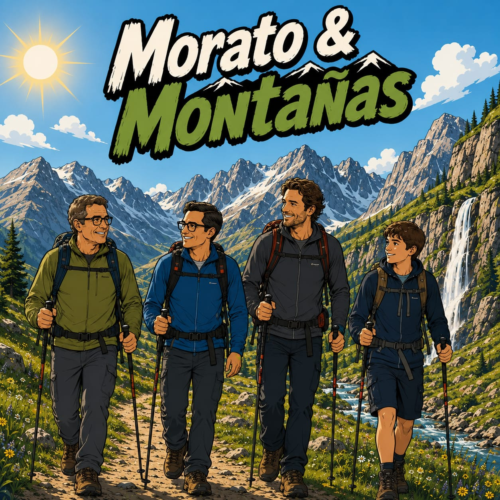

Ruta: -
☰
🎯 Posicionar GPS
📈 Ver elevacion GPX
💡 Acerca de M&Ms
Moratos & Montañas
X

Proyecto creado para reforzar el vinculo con la familia y compartir rutas que dejan huella.
Cada paso juntos hoy, es un recuerdo bonito para siempre.
Comandos
Toca para colapsar
Ruta (GPX, KML, GeoJSON)
Mostrar puntos de interes del GPX
Mapa base
Online OSM (para cachear)
OSM XML local (sin tiles)
Archivo OSM XML opcional (.osm/.xml)
Mostrar nombres (lugares y vias principales)
Iniciar GPS
Detener GPS
Listo
Perfil de elevacion
X
Sin datos de elevacion cargados.